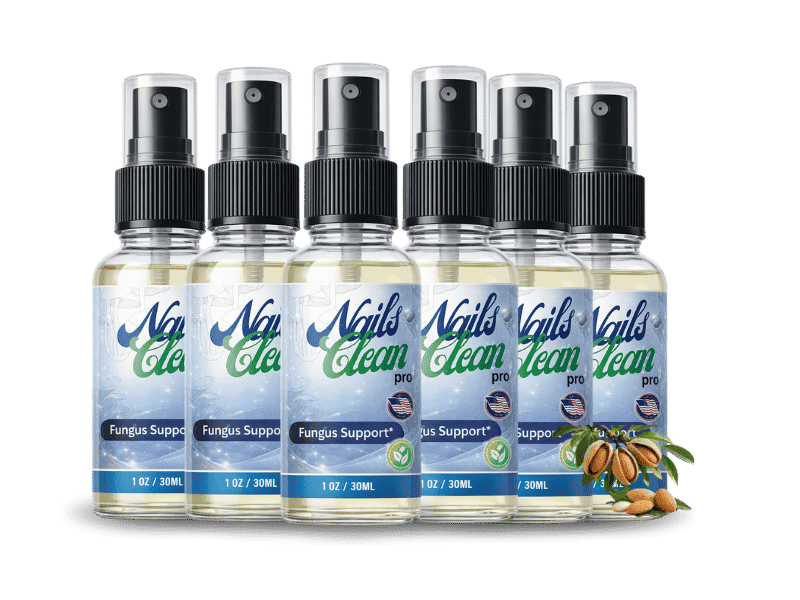

What Is NailsCleanPro And How Does It Work?
NailsCleanPro is a topical spray formulated to support nail clarity, strength, and the health of the skin surrounding the toenails. Unlike thick creams, lacquers, or home remedies that simply sit on the surface of the nail, NailsCleanPro is designed as an ultra-fine liquid spray that absorbs quickly and is intended to reach beneath the hard keratin layer of the nail plate — the area where most topical treatments struggle to penetrate.
Many adults who deal with discolored, thickened, or brittle-looking toenails spend years hiding their feet — avoiding sandals, skipping pedicures, or keeping socks on around family. The core issue, according to the product's positioning, isn't a lack of effort but a delivery problem: most creams and polishes coat only the visible surface, while the areas that actually need support sit underneath the nail bed.
NailsCleanPro takes a different approach with a fast-absorbing formula meant to seep through the nail plate and deliver its natural ingredient blend closer to the nail bed. The company also states that the active compounds are designed to bond with keratin, forming a light protective layer on the nail that continues working between applications — intended to complement, not replace, good foot hygiene and consistent daily use.
NailsCleanPro Ingredients
NailsCleanPro combines a blend of natural extracts and nutrients commonly associated with nail and skin support:
- Oregano Oil Extract: Contains carvacrol, a naturally occurring compound studied for its properties against common fungal organisms in laboratory settings, applied here to help support a cleaner nail surface.
- Biotin: A well-known nutrient for nail keratin production, associated in clinical research with improvements in nail thickness and reduced brittleness with consistent use.
- Turmeric Extract: Rich in curcumin, valued for its calming effect on inflamed, irritated skin tissue around the nail bed.
- Garlic Bulb Extract: Traditionally used for its naturally occurring sulfur compounds, believed to support the skin's natural defenses around the nail.
- Undecylenic Acid: A plant-derived fatty acid recognized for its role in topical nail and skin care formulas.
- Vitamin C: An antioxidant that supports healthy skin tissue and may assist collagen-related repair processes around the nail bed.
- Vitamin E: Helps moisturize and condition the skin surrounding brittle or damaged nails.
- Tea Tree Oil Extract: A botanical oil long used in topical foot care for its cleansing properties.
NailsCleanPro Side Effects
NailsCleanPro is formulated with natural botanical extracts and vitamins, applied topically rather than taken orally, which generally makes it well-tolerated by most users. It is marketed as free from harsh chemicals, steroids, and artificial fragrances, and is said to be manufactured in an FDA-registered facility that follows Good Manufacturing Practice (GMP) guidelines.
As with any topical product, individual skin sensitivity can vary. Users with known allergies to essential oils such as tea tree or oregano should review the full ingredient list before use, and anyone who experiences irritation, redness, or discomfort is advised to discontinue use and consult a healthcare provider.
Pregnant or nursing individuals, and anyone managing an existing skin or nail condition or taking other topical medications, should speak with a healthcare professional before adding NailsCleanPro to their routine.
NailsCleanPro Dosage
Using NailsCleanPro is designed to be simple enough to fit into a morning and evening routine. The manufacturer recommends washing and thoroughly drying the affected area first, then applying 2 to 3 sprays directly onto the nail and between the toes.
The suggested routine is twice daily — once in the morning and once at night — applied consistently at similar times each day. According to the product's own guidance, many users report noticing early changes in nail appearance within the first few weeks, with more visible improvement typically appearing between weeks 4 and 8 as new nail growth comes in. For most people, a full cycle of consistent daily use over 3 to 6 months is recommended to allow enough time for the nail to grow out and replace the affected area — which is why the 6-bottle option is positioned as the package that covers a complete routine.
NailsCleanPro – Refund Policy
Every order of NailsCleanPro is backed by a 60-day money-back guarantee. This gives customers two full months to try the spray as part of their daily routine and evaluate their own results before deciding whether to keep it.
If a customer is not satisfied with their purchase for any reason within that 60-day window, they can request a full refund. To start the process, customers are directed to reach out through the official website's return or customer support channel, referencing their original order details.
Because the guarantee is tied to the original purchase, orders made anywhere other than the official website are not eligible for this refund protection — one more reason most customers are encouraged to order directly through the official source.
NailsCleanPro Customer Reviews
 Sandra M.
Verified Buyer
Verified Purchase – 6 Bottles
Sandra M.
Verified Buyer
Verified Purchase – 6 Bottles
"I'd tried everything for two years — creams, vinegar soaks, you name it. Nothing stuck. About six weeks into using NailsCleanPro twice a day, I finally saw healthy nail growing in. By month three my big toenail looked normal again. I actually teared up the first time I noticed it."
 Rachel T.
Verified Buyer
Verified Purchase – 3 Bottles
Rachel T.
Verified Buyer
Verified Purchase – 3 Bottles
"My husband wouldn't even take his socks off around our kids, that's how embarrassed he was. I ordered him NailsCleanPro and after about two months he walked into the kitchen barefoot and just said 'look.' The nails were coming in clear. We both just smiled."
"I'm a nurse, so I'm on my feet all day and it was starting to affect my confidence at work. A coworker recommended NailsCleanPro. Eight weeks in, three of my four affected nails are almost completely clear, and the last one is catching up. It genuinely works."
NailsCleanPro – Where To Buy
If you decide to try NailsCleanPro, it's important to know where to purchase it safely. The product is not sold through Amazon, Walmart, eBay, or any physical retail store — it is only distributed through the official website.
Because counterfeit or expired look-alike products can appear on unauthorized third-party marketplaces, buying from anywhere other than the official source carries real risk: there's no way to confirm ingredient freshness or formula authenticity, and any such purchase would fall outside the manufacturer's 60-day money-back guarantee.
Ordering directly through the official website ensures you receive the genuine spray, manufactured under the company's stated quality standards, along with full access to customer support and refund protection if needed.
To ensure you're getting the authentic product, most users choose to visit the official website directly.
Is NailsCleanPro A Scam?
No, NailsCleanPro is not a scam. It is a legitimately manufactured topical product made in an FDA-registered facility that follows GMP guidelines, using a blend of natural extracts and vitamins commonly found in nail and skin care formulas.
Skepticism around products like this usually comes from unauthorized imitations sold on third-party marketplaces, or from expecting overnight results that no topical formula can honestly promise. NailsCleanPro does not claim instant results — the company is upfront that visible improvement typically takes several weeks, with full results tied to the natural nail growth cycle over a few months of consistent use.
Purchases made through the official website are processed via secure checkout and are covered by the 60-day money-back guarantee, giving customers a low-risk way to evaluate the product for themselves.
For those who want to verify product details or check current availability, the official NailsCleanPro website remains the safest and most reliable option.
